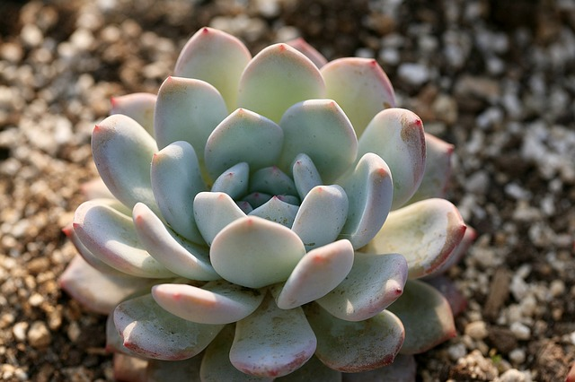
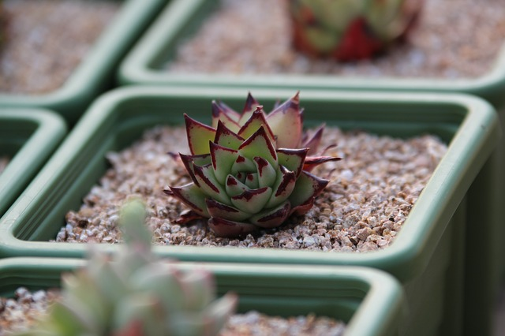

Desert dwelling plants have adapted to surviving in extremely dry environments. Of the two main types of desert plants, xerophytes have adapted through physical means of storing water - such as a succulent’s fleshy leaves- while phreatophytes have adapted by developing lengthy root systems that extend to or near the water table.
The physical adaptations of xerophytes result in beautifully colored and interestingly shaped plants. Succulents and cacti in particular are well known and widely grown for both simplicity of care and the fact that they’re just darn pretty.

a succulent with fleshy leaves
Can I grow a desert dwelling plant?
Yes! Desert dwelling plants like succulents and cacti make great indoor and outdoor plants for anyone, especially people prone to forgetting to water. Most of these plants only need water about once a week, and can often go longer without water without terrible consequence. Sparse watering, removing dead leaves, and ensuring the plant is in a sufficiently large container will result in a happy, healthy plant.
Specifics vary between species, but some basic care guidelines for indoor plants include:
half to full day of sunlight
good draining soil
drainage in planter
allow soil to dry between waterings
little to no fertilizer

desert plants need little water
Talk to one of our knowledgable employees to get specific advice regarding indoor and outdoor desert dwelling plants. Contact us here.